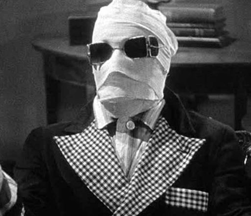
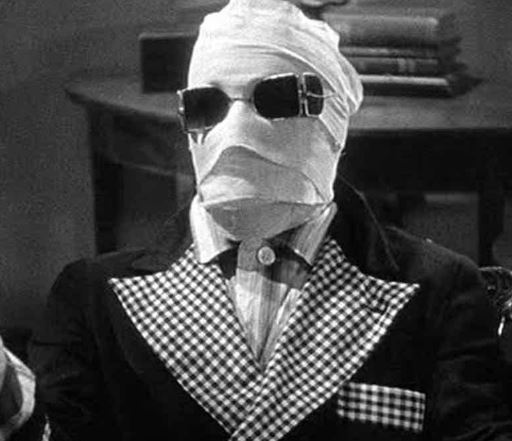

>
UNIVERSAL HORROR MOVIE MONSTERS
HOME ◉
ALTERNATE VERSION ◉
RYAN'S HOMEPAGE ◉
 

Invisible-Man
The Invisible Man is a 1933 American science fiction horror film and probably my favorite of the bunch. It is based based on H. G. Wells' 1897 novel and just recently a more modern movie approach was made in 2020 involving an invisible suit instead of chemicals.